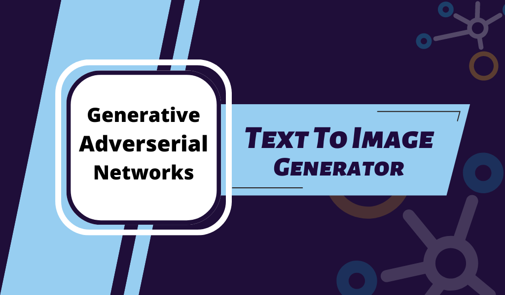

Web Scraping ♦ Exploratory Data Analysis ♦ Natural Language Processing

Acquisition of data using web-scraping, and optimizing the job application process. Analyze job openings, the key requirements, paygrade trends and list out associated recruiters.
★ ★ ★
Technologies
Python • NLTK • Beautiful Soup • Matplotlib • Seaborn • Pandas • Scikit-Learn
Generative Adversarial Networks
Computer Vision ♦ Natural Language Processing ♦ Artificial Neural Networks

Create an image, given a textual description using a model of Stacked - Generative Adversarial Networks (Stack - GANs). Deploy the trained model using Flask on Heroku.
★ ★ ★
Technologies
Python • Google Colab • Tensorflow • Keras • NLTK • Scikit-Learn
NLP ♦ Data Visualization

Analyze the transcripts of podcasts from a particular domain, such as Data Science, thus summarize the content to derive consolidated meaning.
★ ★ ★
Technologies
Python • NLTK • Beautiful Soup • Matplotlib • Seaborn • Pandas • WordCloud
SQL ♦ Data Engineering ♦ Data Visualization

Create a Power BI dashboard showcasing insights derived from the sales dump, after transformations, available as a MySQL Data Source.
★ ★ ★
Technologies
Power BI • MySQL